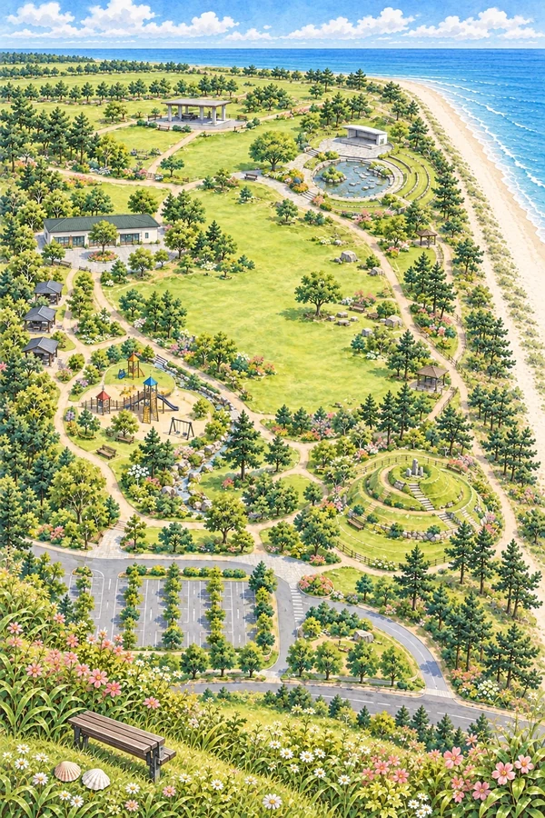
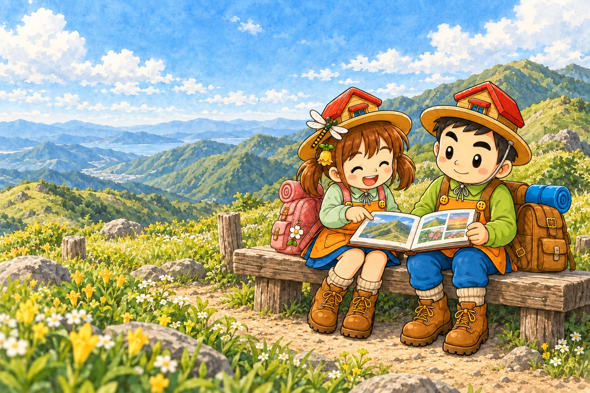
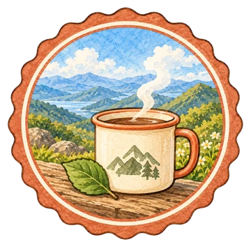
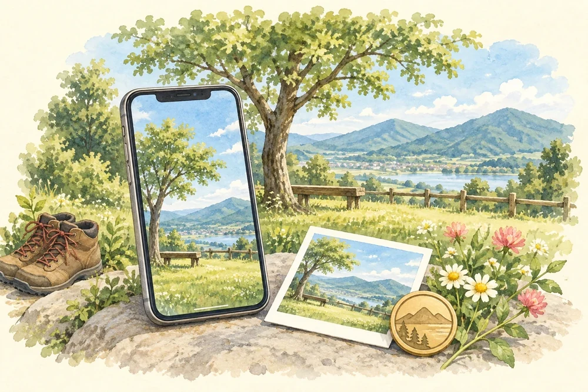
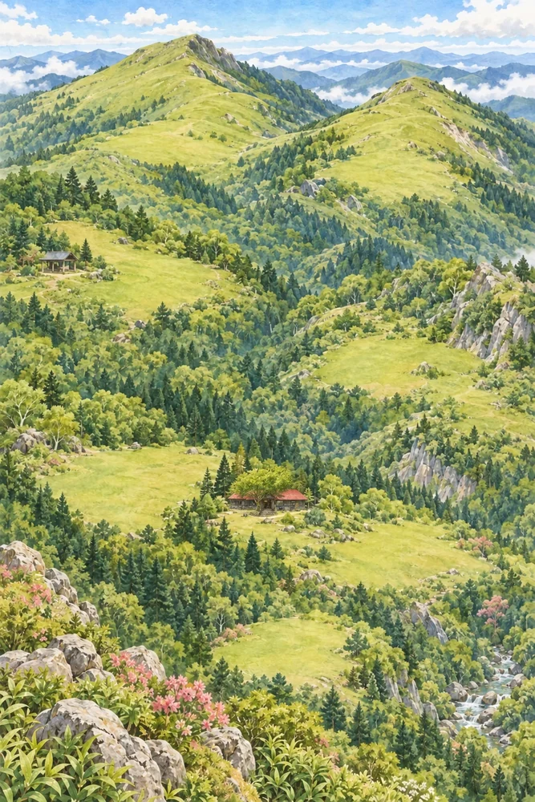
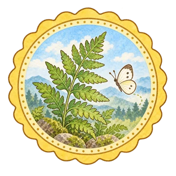
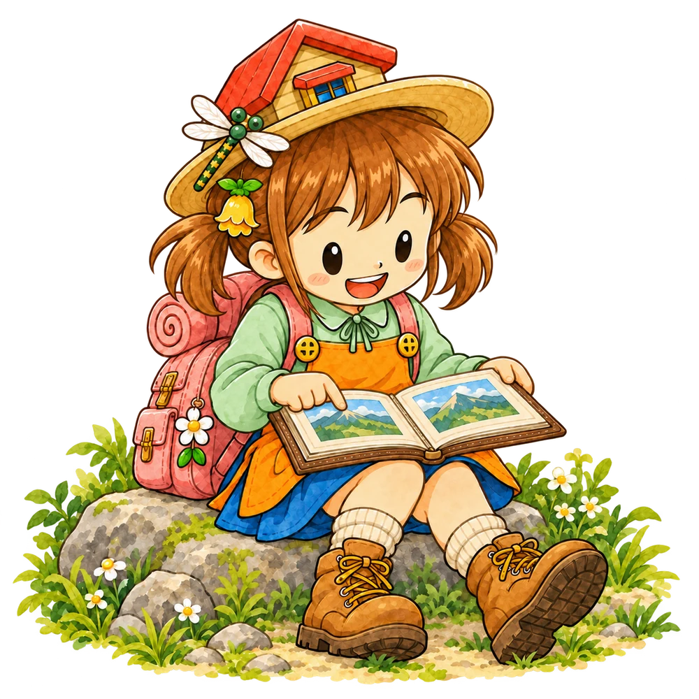
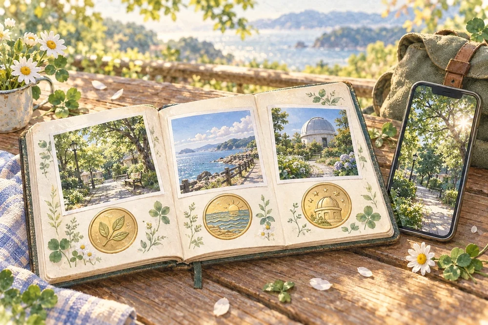

山がすき。阿波がすき。次の「行きたい」が、
やまぺた 登って、撮って、ぺたっと。
次の「行きたい」が、
きっと見つかる。
景色に会いにいく。お気に入りを一枚。
写真がスタンプになって、
いつものおでかけが、小さな冒険になる。
徳島の山とおでかけを楽しむアプリ。現在は招待制のテスト版です。


思い出、ひとつ。01 / おでかけは、見つけるところから。「ここ、行ってみたい。」
「ここ、行ってみたい。」
その一枚が、きっかけに。
マップの地点を開くと、みんなが見つけた景色に出会えます。気になる場所にしおりを付けて、次のお休みの楽しみに。
上手に撮るより、「すき」を見つける。足元の花も、見上げた空も、あなたらしい一枚になります。
写真で、場所を見つける公開は、自分で選べる文章は、帰ってからでOK
行く前・歩く途中・帰ったあとにできること
やまぺたは、徳島の山や身近なお出かけ先を歩き、写真を投稿しながら、コースマップのスタンプを集めるアプリです。
目指すのは、写真の上手さを競うことよりも、「ここ、すきだな」と立ち止まる瞬間。足元の花も、山の上の空も、ひと休みした場所も、自分らしい一枚になります。
行く前から、帰ったあとまで
| とき | 楽しみ |
|---|---|
| 行く前 | マップの地点を開いて、みんなの景色をのぞく。「行ってみたい」を見つける |
| 歩いているとき | 地点に着いたら、安全な場所で写真を一枚。スタンプが増えていく |
| 帰ったあと | 写真帳を開いて、その日をもう一度。説明やタグはゆっくり添える |
| 次のお休み | 前とは違う季節、別のコースへ。同じ場所でも、新しい「すき」に出会う |

今日の「すき」は、どこにあるかな。
02 / マップに、思い出をひとつずつ。
行って、撮って、ぺたっ。
空っぽの印が、あなたの思い出で埋まっていく。
まずは、このページで3つの印を集めてみよう。

遊び方のイメージマップこのページで、ひと足先に体験
気になる印を押してみよう。
山のマップにある、丸い3つの印から選べます。

123
0 / 3 ぺた
そろったね。小さな冒険、完成！
本番は、あなたが見つけた景色で。
次は、身近なおでかけ先から。
Webだけの遊び方体験です。撮影・位置情報・通信による認定は行わず、アプリの記録には残りません。印の位置は実際のチェックポイントではありません。
アプリでは、その地点で写真を撮って投稿。場所を確認できたらスタンプが付き、コースの必須地点がそろうと完成です。
スタンプが付く条件・必須とオプションについて
コースを開くと、一枚のイラストマップにスタンプポイントが並びます。どこまで集めたか、あとどこに行きたいかを、絵を眺めながら確かめられます。
あそびの基本は、4つだけ
- 選ぶ。 気になるコースのマップを開きます。
- 行く。 地点の景色や距離の目安を確かめます。
- 撮る。 立ち止まって一枚。公開・非公開を選んで送ります。
- ぺた。 撮影場所を確認できたらスタンプ獲得。必須地点がそろうとコースのスタンプ集めが完成します。
「必須」はゴールに必要な地点。「オプション」は寄り道の楽しみです。通常のスタンプは、同じ地点を使う別のコースにも表示されます。
写真のGPSか登録時の現在地で場所を確認します。位置を確認できなかったときは、事情を添えてスタッフへ申請できます。写真を送っただけで、必ずその場で押印されるわけではありません。

03 / 帰ってからも、もうひとつの楽しみ。「この空、覚えてる？」
「この空、覚えてる？」
写真帳を開けば、あの日へ。
写真を見返して、ひとこと添えて、お気に入りの一枚を選ぶ。次の山に行かない日も、あの風や、一緒に笑った時間がよみがえります。
たとえば、こんなひとこと。
頂上で飲んだお茶が、
いつもよりおいしかった。
青空ひと休みまた行きたい
公開した一枚が、誰かの「行ってみたい」に。いいねや「今月の一枚」で、まだ知らなかった景色にも出会えます。自分だけの写真帳として楽しんでも大丈夫。
写真帳の使い方をみる ↗写真の共有・しおり・今月の一枚について
マップの地点を開くと、その場所に投稿された公開写真を見ることができます。「こんな景色があるんだ」「今度はここに行ってみたい」。目的地を探す時間も、楽しみのひとつです。
気になった地点には「行ってみたい」のしおりを。コース一覧から、その景色に会えるコースを探せます。
みんなで楽しむ、気軽な写真
- 公開を選んだ写真は、原則すぐに「みんなの写真」へ。スタッフの選考を待つ仕組みではありません。
- 場所・題名・タグで景色を探し、写真を大きく見たり、いいねを付けたりできます。
- 「今月の一枚」は、今月の公開投稿から表示する小さな特集です。通常の公開写真とは別に、最大3枚を紹介します。
- 題名や説明は後からで大丈夫。現地では写真と公開範囲の確認に集中できます。
04 / 一度歩いた場所に、また会いに。同じ場所で、
同じ場所で、
何度も、ときめく。
ひとつのコースを完成させたら、対象コースで季節のチャレンジへ。
急いで全部を埋めなくていい。次のおでかけの楽しみを、ひとつ。
季節の認定には、チャレンジ解放後に撮った写真を使います。冬など、対応していない季節もあります。季節の表示は、その時期の安全を保証するものではありません。
季節チャレンジの解放・写真の日付のルール
初めてコースの必須スタンプを集めたら、対象コースで季節のチャレンジが開きます。最初から全部を埋める必要はありません。まずは、一度歩いた達成感を。
季節のチャレンジに使えるのは、そのコースが解放された日時より後に撮った写真です。昔の写真の季節を書き換えて埋めるのではなく、もう一度出かけて、新しい景色に出会うための仕組みです。
| 春 | 夏 | 秋 | 冬 |
|---|---|---|---|
| 3～5月 | 6～8月 | 9～11月 | 12～2月 |
季節は写真の撮影日時から日本時間で判定します。安全や運用上の理由で、冬など一部の季節を用意していないコースもあります。チャレンジがあることは、その季節に安全に行けるという意味ではありません。
同じ地点・同じ季節の写真は、お気に入りの一枚へ更新できます。写真帳に残す一枚を選ぶ時間も楽しみになります。
05 / はじめの場所は、あなたのペースで。近くで、ぺた。
近くで、ぺた。
いつか、あの稜線でも。
最初から長いコースでなくて大丈夫。
身近な場所で、写真とスタンプの楽しみを見つけよう。
施設の開園時間・入園条件・最新の通行案内は、お出かけ前に確認しましょう。
お試しコース・山の家を目指すときのこと
最初から長い山歩きに挑戦しなくても大丈夫です。「山以外のお試し」には、写真とスタンプの使い方を確かめるコースがあります。
| 身近に試す | 山を楽しむ |
|---|---|
| 沖浜で、おためしぺた | はじめの一歩、剣山へ |
| JAアグリあなん運動公園 | 自分の足で、剣山へ |
| 月見ヶ丘海浜公園 | 次郎笈の稜線へ |
| あすたむらんど | 山の家から、小さな発見 |
| とくしま動物園 | 山の家から、次郎笈へ / ふたつの頂へ |
お出かけ前に、施設の開園時間・入園条件・通行案内を確認してください。
山の家へ、少しずつ
剣山・次郎笈を越えて、奥槍戸山の家へ。そこで終わりではなく、帰りの登り返しまで含めた往復を目標に、経験を振り返る構想です。
「山の準備」には、帰ってきたときの余力や体調を残せます。少しずつ経験を重ね、自分に合う山歩きを見つけましょう。スタンプは、往復できる体力や安全を保証するものではありません。

さあ、はじめの一枚へ。次のお休み、
次のお休み、
何を「ぺた」しよう。
メール登録・パスワード作成は不要。
まずは短いお試しコースから。
一枚の写真が、次の楽しみにつながります。
現在は招待制のテスト版です。参加案内を受け取った方は、案内に従ってインストールしてください。
利用開始・圏外の準備・安全に使うために
気軽に始めるために
メールアドレスやパスワードの登録は不要です。通信できる場所で「この端末ではじめる」からスタート。子どもにも伝わる「あそびかた」と、記録を増やさず練習できる案内があります。
落ち着いた色、山のイラスト、なぎかちゃんと奥槍どん、小さな効果音が体験を彩ります。山では音を止めて使えます。
出かける前に、ひと準備
コースはあらかじめ端末に保存できます。圏外で撮った写真は下書きや送信待ちに残し、通信が戻ってから送信します。みんなの写真の閲覧や、スタンプの認定結果の更新には通信が必要です。
やまぺたは登山用地図・道案内・救助のアプリではありません。 イラストの道や直線距離を頼りに進まず、登山用地図と現在の通行状況を別に確認します。操作や撮影は、安全な場所で立ち止まって。
アプリを始めるには
現在は招待された方が使えるテスト版です。Android・iPhoneとも、参加案内に従ってインストールしてください。
次は、使い方ガイドへ。最初の設定から、一枚目の写真まで順番に案内します。